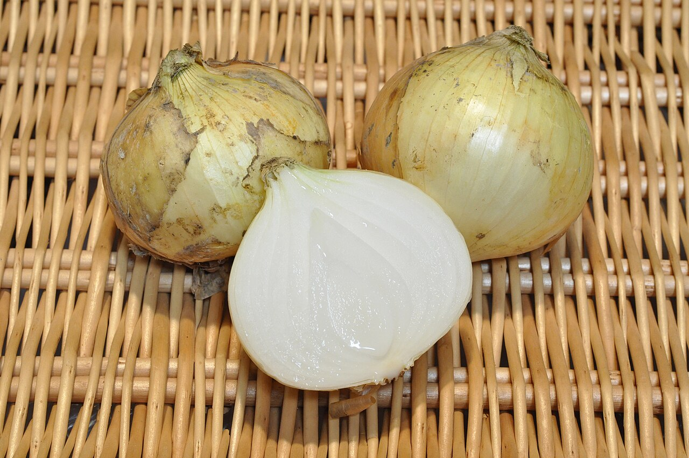
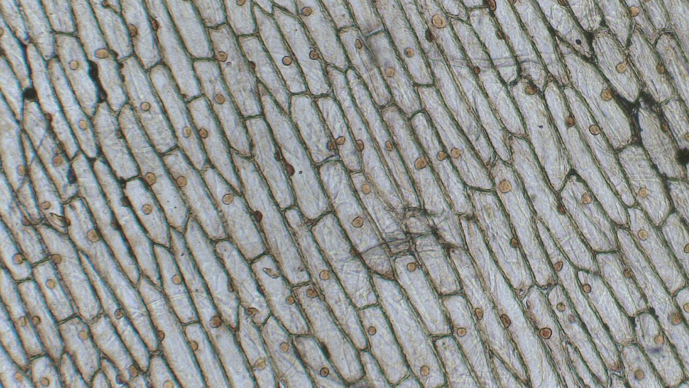
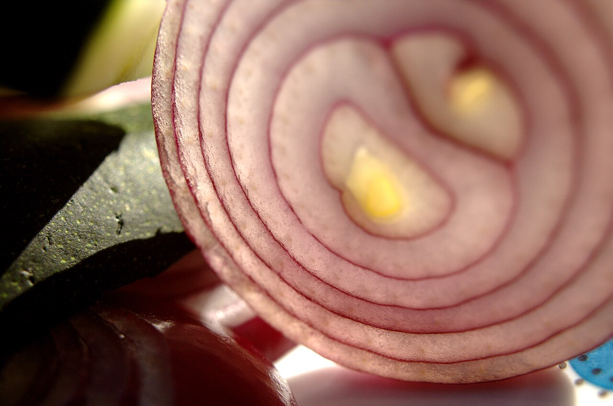
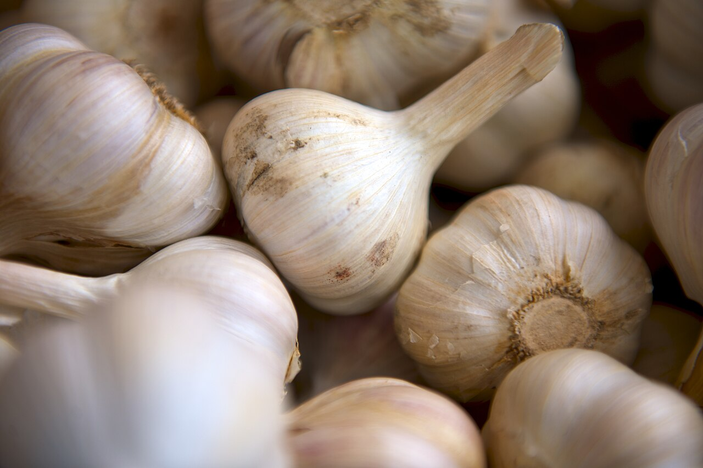
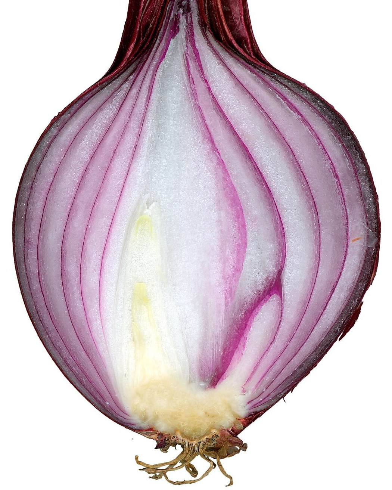
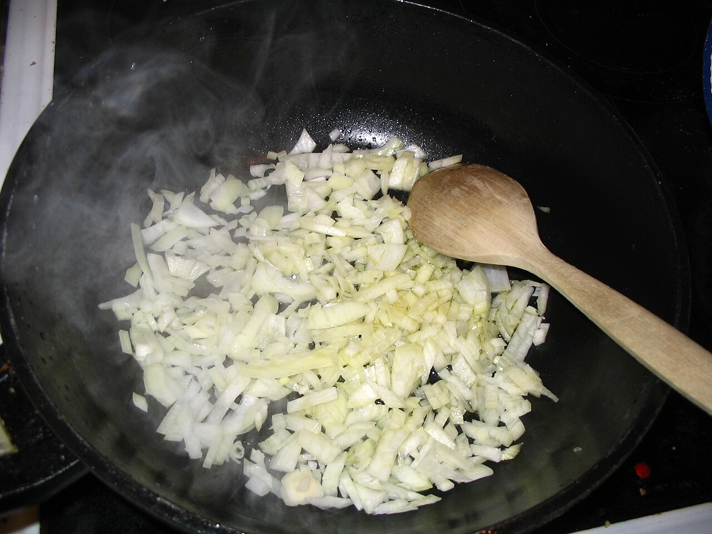

自然・科学 Nature & Science玉ねぎを切ると、なぜ涙が出る？
涙の成分は、切る前の玉ねぎには入っていません。包丁が細胞を壊した瞬間から涙が出るまでを流れ図で、2つの酵素のはたらきを模式図で追いかけます。同じ仲間のニンニクでは、なぜ涙が出にくいのでしょう？
2026.10.31 UP 約5分で読める 文：SOMOSOMO編集部
写真：Onions 002／Ocdp（2015年、CC0）
アメリカ・ボストンの近く、2013年9月12日。ハーバード大学の講堂で、「人を笑わせ、そして考えさせる研究」に贈られるイグ・ノーベル賞の授賞式が開かれました。化学賞を受けたのは、日本の食品会社ハウス食品の研究者たちです。研究の中身は、玉ねぎが人を泣かせるしくみでした。
玉ねぎを刻むと、目がしみて涙が出ます。台所ではおなじみの出来事です。でも、そんな身近なことが、なぜ21世紀になってから賞をもらうほどの発見になったのでしょうか。答えは、包丁を入れた瞬間に玉ねぎの中で起きる、小さな化学反応にあります。
In a word
包丁で細胞が壊れると、ばらばらにしまわれていた材料と酵素が出会い、2つの酵素が順番にはたらいて 、目にしみる気体ができます。この気体が目の神経を刺激し、涙で洗い流そうとするのです。2つ目の酵素は2002年まで知られていませんでした 。
01
Made on the Spot
涙の成分は、切るまで玉ねぎの中にない
丸ごとの玉ねぎに顔を近づけても、目はしみません。涙の成分は、もとから入っているわけではないからです。玉ねぎを切ったりつぶしたりしたとき、はじめて作られます。
玉ねぎは、小さな細胞がびっしり集まってできています。細胞の中には、硫黄（いおう）をふくむ材料と、それを分解する酵素がしまわれています。酵素とは、体の中で化学反応を進める、はさみや工具のようなたんぱく質です。包丁で細胞が壊れると、この2つが混ざり合い、反応が始まります。

包丁が壊す、小さな部屋 玉ねぎの薄皮を、顕微鏡で120倍に拡大した写真です。細長い部屋の1つ1つが細胞。包丁の刃は、この部屋の壁をまとめて切り裂いていきます。写真：Living cells of onion epidermis ／Berkshire Community College Bioscience Image Library（2017年、CC0）
反応の最後にできるのが、涙の成分「プロパンチアール S-オキシド」です。すぐに気体になって目に届き、角膜（黒目をおおう透明な膜）の神経を刺激します。すると涙腺（るいせん）から涙があふれ、刺激のもとを洗い流します。
玉ねぎにとっても、これは身を守るしくみと考えられています。かじられて細胞が壊れたとたん、相手の目や口を刺激する物質を作って、食べられにくくするのです。
Fig.01 包丁を入れてから、涙が出るまで
CUT 細胞が壊れる 別々にしまわれていた材料と酵素が混ざる ENZYME 1 酵素1がはたらく アリイナーゼが材料を切り、壊れやすい中間の物質ができる ENZYME 2 酵素2がはたらく LFS が中間の物質を組みかえ、涙の成分にする GAS 気体が目に届く 角膜の神経が刺激を感じる TEARS 涙が出る 涙腺が涙を出し、刺激のもとを洗い流す
見どころは、ENZYME 1 と ENZYME 2 の段。酵素が2回はたらいて、はじめて涙の成分ができます。どちらかが止まれば、涙は出ません。
02
The Second Enzyme
犯人の酵素は、1つではなく2つだった
20世紀のあいだ、涙のしくみはもっと単純だと考えられていました。1つ目の酵素アリイナーゼが材料を切れば、できた物質がひとりでに 涙の成分へ変わる、という説明です。
ところが1990年代、工場でのある困りごと（その話は最後に）の原因を調べていたハウス食品の研究チームが、この定説では説明のつかないことに気づきます。調べていくと、アリイナーゼだけでは、涙の成分はほとんどできませんでした。
チームが見つけたのは、2つ目の酵素でした。名前は「催涙因子合成酵素」、英語の頭文字をとって LFS。涙を出させる成分を作る酵素、という意味です。2002年10月、この発見はイギリスの科学誌『ネイチャー』に、「目に涙を浮かばせる、玉ねぎの酵素」という題で載りました。
Fig.02 2つの酵素と、分かれ道
硫黄をふくむ材料
（イソアリイン）
スルフェン酸
（壊れやすい中間の物質）
香り・辛みの成分
チオスルフィナート
など
目にしみて、涙が出る
玉ねぎらしい風味に
涙の成分
プロパンチアール
S-オキシド
酵素1：アリイナーゼ
酵素2：LFS
自然にくっつく
見どころは、真ん中の分かれ道。LFS がはたらくと赤い左の道へ進み、涙の成分になります。2002年までは、左の道もひとりでに進むと考えられていました。
しくみがわかったことで、涙の出ない玉ねぎへの道も見えてきました。2013年、この論文はイグ・ノーベル化学賞を受けます。

1回切れば、層の数だけ切り口ができる 輪切りにした赤玉ねぎ。何重にも重なった層を刃が横切るので、ひと切りでたくさんの層に断面ができ、そのすべてで反応が始まります。写真：Red onion closeup 2 ／Roland Geider（2007年、パブリックドメイン）
03
No More Tears
ニンニクは泣かせない。人は、泣かせない玉ねぎを作った
玉ねぎとニンニクは、どちらもネギの仲間です。ニンニクにもアリイナーゼがあり、刻むと強いにおいが立ちます。それなのに、ニンニクを刻んで泣く人はあまりいません。
ちがいは材料にあります。ニンニクの主な材料は、玉ねぎのイソアリインではなく「アリイン」です。形が少しちがうため、涙の成分ではなく、刻んだニンニクのあの強い香りの成分「アリシン」になると説明されています。ニンニクは、図の右の道を進む植物なのです。

同じ仲間でも、道がちがう 皮つきのニンニク。玉ねぎと同じく、切ると酵素がはたらきます。けれども材料の形が少しちがうので、できるのは涙の成分ではなく、香りの成分です。写真：Garlic Bulbs (Unsplash) ／Matthew Pilachowski（2014年、CC0）
人の手で、泣かせない玉ねぎを作る試みも進みました。ハウス食品は、重イオンビーム（原子を高速で飛ばす放射線の一種）を種に当てて、性質の少しずつ変わった玉ねぎをたくさん育て、その中から目にしみにくいものを選び出しました。遺伝子組み換えではない品種改良です。
2012年にできたのは、LFS ではなく、1つ目の酵素アリイナーゼがとても少ない玉ねぎ でした。めざしたのは、涙だけでなく辛みもない玉ねぎです。LFS だけを止めると、中間の物質は図の右の道へ回り、別の成分が増えて風味が変わることが知られています。
反応の入り口で止めれば、涙の成分も辛みもほとんどできません。この玉ねぎは2015年10月に「スマイルボール」の名で試験販売され、今は毎年秋から冬にかけて数量限定で売られています（2025年で11回目）。
04
Kitchen Tips
涙を減らすなら、よく切れる包丁でゆっくり
ふつうの玉ねぎでも、涙はある程度減らせます。考え方は2つ。壊す細胞を減らすことと、できた気体を目に届けないことです。
よく切れる包丁で、ゆっくり切る 2025年、アメリカ・コーネル大学などのチームが、切るときに飛ぶしぶきを高速カメラで調べました。しぶきには涙の成分のもとが乗り、目のほうへも飛びます。切れない刃は層を押しつぶしてから切るので、汁が勢いよく飛び出します。鋭い刃でゆっくり切ると、しぶきは減ります。
気体を、顔から遠ざける 換気扇を回したり、流れる水の近くで切ったりすると、気体が目に届く前に運び去られます。ゴーグルで目をおおうのも、効き目が期待できます。
根元は、最後まで残す 玉ねぎの根元には、涙のもとになる硫黄の化合物が多く集まっています。根元を切り落とさずに残して刻むと、目にしみにくくなります。
刃の鋭さで、しぶきが変わる まな板に並んだ、いろいろな包丁（写真はイメージです）。研究では、刃が鈍いほど、しぶきが多く勢いよく飛びました。写真：Various cooking knives - Kyocera, Henckels, Mac, Wiltshire ／WLU（2007年、パブリックドメイン）
よく聞く「冷やしてから切る」は、意見が分かれます。冷やすと酵素の反応がにぶるため効く、という説明がある一方、先のチームのある実験では、冷やした玉ねぎでも、しぶきの速さに差は見られませんでした。ただ、玉ねぎごとのばらつきが大きく、さらに調べる必要があるとされています。

根元を残して、刻む 縦半分に切った赤玉ねぎ。下にある黄色っぽい部分が根元です。みじん切りのときは、ここを切り離さずに残しておくと、層がばらけず、目にもしみにくくなります。写真：Red onion cut ／Amada44（撮影年不明、パブリックドメイン）
05
By the Numbers
数字で見る、玉ねぎの涙
40m/秒 切ったときに飛び出すしぶきの、速さ。最大で約40m/秒（時速約140キロ）に達した。測った速さは1〜40m/秒と幅があるWu ほか、PNAS、2025年
11年 涙の酵素 LFS の論文が『ネイチャー』に載ってから、イグ・ノーベル賞を受けるまでの年月Improbable Research、2013年
10〜11度 ふつうの玉ねぎの糖度（甘さの目安）は約10〜11度。リンゴやナシに近いが、切ったときにできる涙の成分（辛みの成分でもある）が甘さを隠しているハウス食品グループ本社、2025年

炒めると、ふつうはきつね色に フライパンで炒めはじめた、刻んだ玉ねぎ。火が通ると、やがて茶色く色づいていきます。ところが、ある条件がそろうと、ちがう色になることがあります。写真：Frying onion ／Dnor（撮影年不明、パブリックドメイン）
Here's the Fun Part
ここが面白い！
ハウス食品のチームは、もともと涙を研究していたわけではありません。1990年代、レトルトカレーを作る工場で、玉ねぎとニンニクを炒めると、ときどききつね色ではなく緑色 になってしまう困りごとがありました。製品にならず、むだが出ます。
なぜ緑になるのか、くわしいしくみは同社の資料にも書かれていません。ただ、この「緑変（りょくへん）」の原因を探る途中で、チームは、涙の成分の作られ方が定説では説明できないことに気づきました。カレーの色の謎を追った先で、LFS が見つかったのです。
工場の小さな困りごとが、イグ・ノーベル賞と、泣かせない玉ねぎにつながりました。
次に玉ねぎを刻んで目がしみたら、包丁の刃を見てみてください。その涙は、刃が細胞を壊した数だけ生まれた、2つの酵素の仕事の跡です。